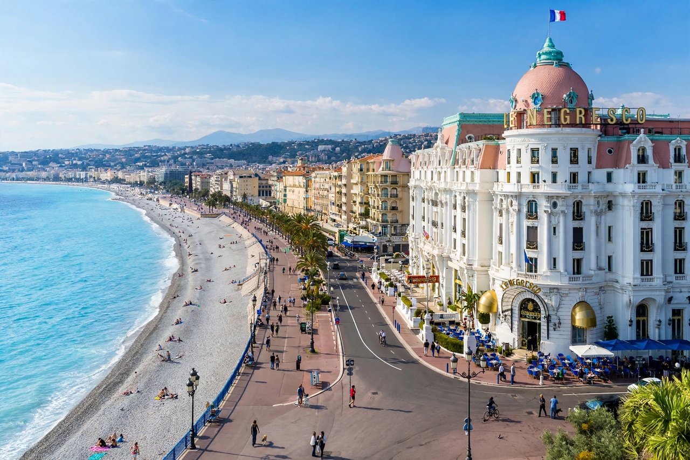

Wikipedia — the free encyclopedia
| Country | France |
| Region | Provence-Alpes-Côte d'Azur |
| Department | Alpes-Maritimes |
| Population | About 350,000 (city, estimate) |

Nice is a city on the French Riviera (Côte d'Azur) on the Mediterranean coast of southeastern France, and the prefecture of the Alpes-Maritimes department. Founded by Greeks from Massalia around 350 BC as Nikaia, it later passed between Provence, Savoy and Sardinia before being ceded to France in 1860 by the Treaty of Turin.
The city's long seafront curve along the Baie des Anges is lined by the Promenade des Anglais, built in the 19th century when Nice became a fashionable winter resort for the British and Russian aristocracy; the Negresco hotel is its most famous landmark.
Nice is known for its old town (Vieux Nice) of narrow lanes, the Cours Saleya flower and food market, and a strong artistic heritage — Matisse and Chagall both lived and worked here, and museums are dedicated to each. The Nice Carnival, held each winter, is one of the world's oldest. The port, Castle Hill (Colline du Château) and the Cimiez district with its Roman remains complete the classic picture of the city.